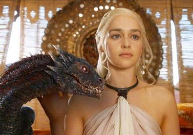

 menjadi pemimpin yang bijak tetapi juga berpotensi sebagai pemimpin yang kejam, seperti penggambaran Varys tentang "flip coin" ketika berbicara dengan Jon Snow. Selalu ada perang "between good and evil" di dalam diri Daenerys.Daenerys versi evil sudah tergambar bahkan dari season 1, ketika digambarkan reaksi dingin Daenerys melihat kematian Viserys akibat disiram cairan logam panas.
Daenerys adalah penggambaran sempurna dari apa yang dikatakan oleh Abraham Maslow, seorang psychologist, "if you have a hammer, everything looks like a nail". Dari sini kita melihat bahwa go to move Daenerys terhadap musuh-musuhnya adalah "Dracarys". Akan tetapi di sini muncul pertanyaan, jika go to move Daenerys kepada musuh-musuhnya adalah Dracarys, maka plot yang masuk akal terjadi di King Landing adalah Daenerys dan Drogon langsung menyerang Red Keep dan membakar Cersi Lannister, yang merupakan musuhnya, tanpa membakar penduduk King Landing, apa yang membuat Daenerys menggila sehingga juga membakar penduduk King Landing? Untuk menjawabnya, mari kita melihat perjalanan karakter Daenerys sebagai "Tragic Hero" bukan hanya sebagai "Hero".